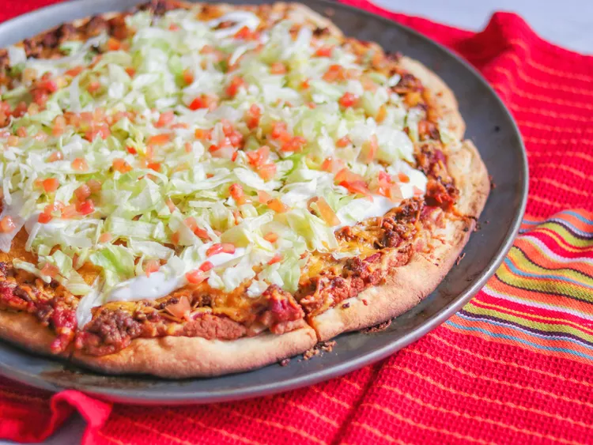

Home
Taco Pizza Recipe

Description
Enjoy the best of both worlds with this easy taco pizza recipe! A crispy pizza crust topped with seasoned beef, melty cheese, fresh veggies, and zesty taco flavors. Perfect for a fun family dinner or party snack!
Ingredients
- 10 fluid ounces warm water
- ¾ teaspoon salt
- 3 tablespoons vegetable oil
- 4 cups all-purpose flour
- 2 teaspoons active dry yeast
- 1 (6 ounce) can tomato paste
- ¾ cup water
- 1 (1.25 ounce) package taco seasoning mix, divided
- 1 teaspoon chili powder, or to taste
- ½ teaspoon cayenne pepper, or to taste
- 1 (16 ounce) can fat-free refried beans
- ⅓ cup salsa
- ¼ cup chopped onion
- 4 cups shredded Cheddar cheese
Steps
- Add water, salt, oil, flour, and yeast to the bread machine in the listed order.
- Select the dough cycle and check the dough after a few minutes.
- If the dough is too dry, add water 1 tablespoon at a time until pliable but not sticky.
- In a small bowl, mix tomato paste, water, and ¾ of the taco seasoning.
- Stir in chili powder and cayenne pepper; set aside.
- In another bowl, combine refried beans, salsa, and onion; set aside.
- Cook ground beef in a skillet over medium heat until browned; drain excess fat.
- Season beef with the remaining taco seasoning and a little water; simmer briefly.
- Preheat the oven to 400°F (200°C).
- Once the dough cycle finishes, remove and divide the dough in half.
- Pat each dough half into a 12-inch pan.
- Spread the bean mixture over the dough, followed by the tomato mixture.
- Sprinkle with seasoned beef and top with Cheddar cheese.
- Bake for about 15 minutes, turning pizzas halfway through, until crust is golden and cheese is melted.